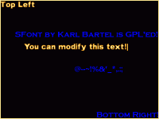
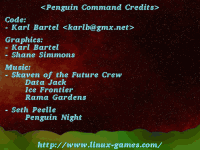

- This Site
- Information
- News
- Game Links
- About me
- GitHub
- Software
- PC Games
- Penguin Command
- BumpRace
- Black-Box
- Castle-combat
- NuclearChess
- Web Games
- jsNumbers
- Zaurus Games
- zSubHunt
- zBlack-Box
- zNumbers
- zMerlin
- zTappy
- zChain
- VR3 Software
- Black-Box-VR3
- Numbers
- Easy install
- Libs
- SFont
- Fonts for SFont
SFont

- Why Should I use SFont?
- It supports colored, alpha mapped fonts
- It is easy to use
- You don't need any extra libs - just add the tiny SFont.c (4K) to your objects!
- It's easy to create your own fonts!
- Nice collection of good fonts
- Handle as many fonts as you like at the same time
- It works on any platform supported by SDL
- It's GPL'ed. Change anything you dislike
- It's well tested and used in many projects
- You don't have to deal with strange file formats: all font info is stored in one image file
- The fonts are not dependant on the used image file format
- Nice C++ integration via a wrapper
- Downloads
- Latest source code
Git repo which contains the SFont library (one .c and one .h file), a c++ wrapper, three example programs, two fonts, and the SFontViewer. - SFont 2.03
This tarball contains the SFont library for SDL1.2 - SFont 1.8
This is the older SFont version. Only use if you have not updated the API for the last decades.
- Latest source code

- These projects use SFont
- netPanzer, an online multiplayer tactical warfare game
- Barrage, a rather violent action game
- SGE, a good graphics lib
- SDL Perl, the SDL perl wrapper
- RUDL, the Rubyesque Directmedia Layer
- Kyra supports the SFont file format
- libksd, a game framework
- Penguin Command, a missile command clone
- BumpRace, a fun racing game
- BlackBox, a puzzle game
- Castle-Combat, a multiplayer action-strategy game
- Rock Dodgers, a side scroller
- Angel Wars, a vertical scroller
- BFont adds some nice features to SFont
- Kobo Deluxe, a remake of arcade game xkobo
- YaSFCave, a simple but funny action game
- Freedroid, a Paradroid clone
- Super Mario War, a Mario deathmatch game
- Other interesting SFont links
-
-
SFontmaker
A Tool that helps creating new Fonts. -
SFont Fontbuilder GUI
A Windows GUI for SFont Fontbuilder -
Ilana's Programming Tools
Home of an SFont fork, which supports international characters. -
SFont Mini Howto
Mini Howto about SFont Font creation for Windows users. -
EasyGL
A library which makes working with OpenGL easier for users of the Pike language. It supports SFont Fonts.
-
SFontmaker